- A Free Body Diagram (FBD) for each mass can be produced by pressing
the Free Body Diagram button ().
When you do this the images of the masses will fade slightly and force
vectors representing the weight and tension will appear (see figure
on the right). The hand indicates that mass 2 is held before release.
In this case the tension in the strings is due entirely to the weight
of mass 1.
|
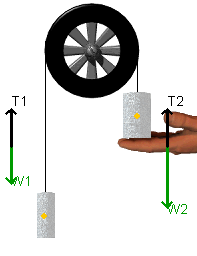 |
- You should note that when you press the play button (),
the supporting hand disappears and the masses can now move. The tensions
shown in the strings will change - try this with several different mass
combinations.
|
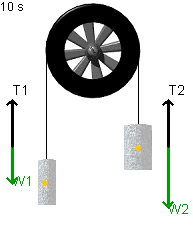 |
- The tensions in the supporting strings are
not shown. They can, however, be easily calculated by first finding
the acceleration for each mass and then applying Newton's 2nd Law. For
example, in the previous discussion of acceleration we determined that
mass 1 was accelerating upward at 3.92 m/s2.
If we use the FBD for mass 1 (shown on the left) and if we assign up
as the positive direction, the following force-equation is implied:
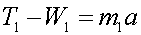,
and since 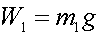,we
find that 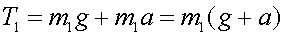
Since mass 1 = 0.300 kg and a = 3.92 m/s2,
we find that T1 = 4.12 N. We leave it for you to show that
T2 is also 4.12 N.
|
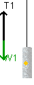 |
- When you run the applet Atwood you will see a horizontal line labeled
"Ep Reference". This line is used to define a position at
which the two masses have zero potential energy. You can capture this
line by positioning the mouse over it and then, holding down the left-mouse
button, drag up or down. When you "capture" the line it will
fade slightly as shown.
To illustrate this, adjust the masses so that mass 1 = 300 g, mass 2
= 700 g.
|
EP Reference not yet "captured"
by the mouse
|
|
EP Reference has been"captured"
by the mouse
|
- Each mass has a yellow dot which indicates the center of
mass for each body. To see how to use the EP reference line effectively,
position the EP Reference line so that it passes through the yellow
dot (center of mass) for mass 1.
|
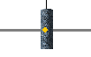
|
- Press the play button (),
and wait until the motion stops and then press the View Graph button
(). Produce
a graph with time on the x-axis and the potential energy of mass 1 (m1
EP) on the y-axis. You should see a graph very similar to the one appearing
on the right. Note that the potential energy for mass 1 starts at zero
- just as we would expect since we put the EP Reference line at this
point. Also, note that when the motion stopped, mass 1 had ascended
to a point 1.133 m above the reference line. Since 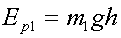(where
Ep1 is the potential energy of mass 1 and h is the height
through which it moved), we can insert the numbers to find that:
Ep1 = (0.300 kg)(9.81
m/s2)(1.133 m) = 3.33 J.
- You can verify this calculation by inspecting
the graph on the right.
|
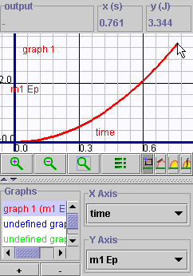
|
- A powerful feature of the grapher is the ability to
create new variables that are not listed in the original drop-down menu
of variables to plot. Since we plotted the potential and kinetic energy
terms for the two masses in the previous example, it is instructive
to ask "What would the sum of all of these terms look like?".
To do this, close the graph and press the data collection button (
 ).
A drop-down menu appears ()
- choose "Select Data". A dialogue box like the one shown
on the right will appear. Since you want to create an expression which
does not appear in those listed, press "Add". ).
A drop-down menu appears ()
- choose "Select Data". A dialogue box like the one shown
on the right will appear. Since you want to create an expression which
does not appear in those listed, press "Add".
|
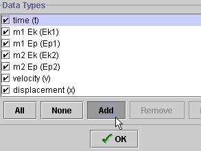 |
- After pressing "OK" (),
a new dialogue box opens. Fill in the blank spaces the same way as shown
on the right. Be very carefully to type the variables exactly as they
appear in the list of available variables. You can only build equations
out of the preexisting set of variables. When you are finished, press
OK. You have now created a variable called "Total Energy"
and it is available for plotting.
|
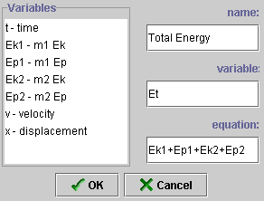 |
- Now you are ready to plot "Total Energy". To do
this, you will need to add one more equation to the graph. Press the
small "+" button at the bottom of the graph panel (see figure
on the right). A new graph, labeled "undefined graph" appears
at the bottom of the previous list of 4 graphs.
|
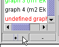 |
- Now, proceed as you would with any other graph. Note that
this time when you press the "X axis" or "Y axis"
buttons a new variable appears in the list - "Total Energy".
Select time for the X axis and Total Energy for the Y axis.
- Next, press reset ()
and then press play ().
This will "update" the graph and also use the new variable
that you just defined. When finished you should see a graph very similar
to what appears on the right.
|
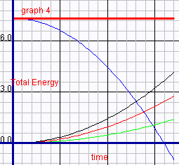 |